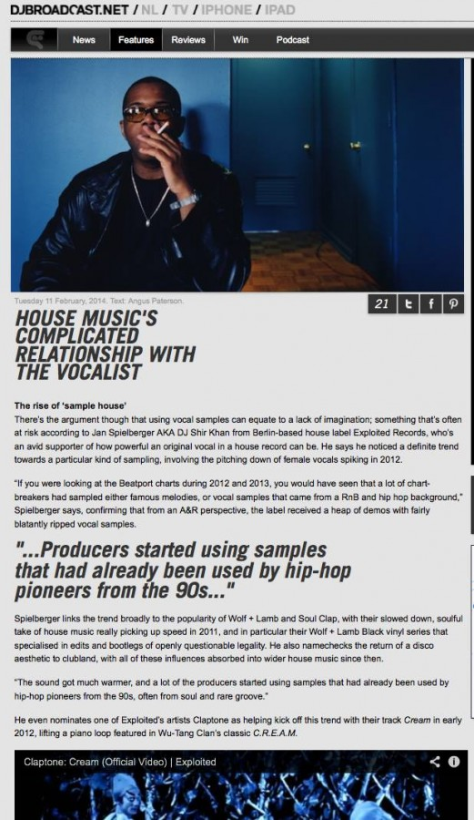

House Music’s Complicated Relationship With the Vocalist
{kind=link}

Amid all the unprecedented hype last May around the release of Daft Punks’s Random Access Memories, which saw the French duo swapping their occasionally controversial reliance on samples for multi-million dollar studio sessions, another occurrence saw the dance community uniting in reverence. When Texas-based DJ/producer/vocalist Romanthony passed away, it emphasised the powerful and long-lasting impact an original vocal can have in a club record.
Romanthony was a DJ and producer in his own right with a history stretching back to the 90s, though most iconic was his contribution to Daft Punk’s 2011 anthem One More Time. His passing triggered an en mass show of respect from electronic music names as diverse as Martyn, Tiga, Pete Tong, Erol Akan, Boys Noize as well as Daft Punk themselves.
Otherwise though over the past year, house music has had a somewhat mixed relationship with the vocalist; a push-pull that on one side saw the likes of Disclosure and Ben Westbeech achieving extraordinary crossover success when working with original vocalists; and on the other, an endless stream of house producers seduced by the practical possibilities of plucking a vocal sample from any number of obscure places. What’s enabling a fresh approach though is technology; producers are making full use of the tools at their disposal to reappropriate their samples and make them anew, often rendering them unrecognizable from the original.
UK duo Dusky have been one of the most successful and influential acts making their way into Beatport’s ‘deep house’ charts over the past 12 months, even triumphantly edging out the EDM bangers to take the #1 spot last November. While the duo are well aware of what constitutes a good original house vocal, featuring several on their debut album Stick By This in 2011, they’re also a prototype example of how house music is working with vocal samples at the moment.
Listening to their latest single 9T8 that dropped on School Records in January, you’d make an educated guess that its brief, looped vocal snippet was lifted off a hip-hop record; though it’s slowed down and warped to such a degree that it’s impossible to tell what’s being said, or where it might have come from. Elsewhere though, the vocal hook that was front-and-centre on their single Nobody Else for Will Saul’s ubiquitous Aus Music label last year was identified as a snippet taken from 1997 single Head Over Heels, from NYC RnB girl group Allure.
Getting producers to open up about how they source their samples can prove to be a difficult task, though music blog Live For the Funk got them to share a few details last year. “Last time we were on tour in America I spent a whole afternoon in a record shop buying really shit old R'n'B records that no one wanted. There's all the B-sides on the 90's records that have acapellas on them, so just ripped off vinyl, or taken from sample packs, or wherever, you can phase tunes to get vocals off them and stuff, so just various places. Just use your imagination”.
The rise of ‘sample house’
There’s the argument though that using vocal samples can equate to a lack of imagination; something that’s often at risk according to Jan Spielberger AKA DJ Shir Khan from Berlin-based house label Exploited Records, who’s an avid supporter of how powerful an original vocal in a house record can be. He says he noticed a definite trend towards this kind of sampling work, with the pitching down of female vocals in particular spiking in 2012.
“If you were looking at the Beatport charts during 2012 and 2013, you would have seen that a lot of chart-breakers had sampled either famous melodies, or vocal samples that came from a RnB and hip hop background,” Spielberger says, confirming that from an A&R perspective, the label received a heap of demos with fairly blatantly ripped vocal samples.
Spielberger links the trend broadly to the popularity of Wolf + Lamb and Soul Clap, with their slowed down, soulful take of house music really picking up speed in 2011, and in particular their Wolf + Lamb Black vinyl series that specialised in edits and bootlegs of openly questionable legality. He also namechecks the return of a disco aesthetic to clubland, with all of these influences absorbed into wider house music since then.
“The sound got much warmer, and a lot of the producers started using samples that had already been used by hip hop pioneers from the 90s, often from soul and rare groove.”
He even nominates one of Exploited’s artists Claptone as helping kick off this trend with their track Cream in early 2012, lifting a piano loop also heard in Wu-Tang Clan’s classic C.R.E.A.M.
As Spielberger himself says, using samples and making edits has long been a central part of DJ culture. One key difference now though he says is that while the samples used to originate from vinyl enthusiasts digging deep into their wax collection, now there’s a proliferation of samples available quickly and easily online via sample packs, file sharing and other nefarious means. Spielberger questions whether all of the “sample house” that made it into the Beatport charts was legitimately cleared; perhaps more importantly though, he says the practice can run the risk of disconnecting the producer from the authentic soul of what they’re sampling.
“I do think that a lot of artists don’t sample from vinyl anymore; instead they’re using sample packs and just looking in there to see if there’s anything suitable. But this also means they kind of loose contact with the original source, and not knowing anymore what they actually sampled.”
As can so often be the case with dance culture, once a trend picks up momentum there will be a wealth of other producers following suit, again with the impact of watering down the essence. “Once one producer becomes famous from using a catchy sample, a lot of other producers will follow. I’ve seen that even people who have been in the game for quite some time, all of a sudden started making sample house and sending me demos, which really confused me”.
Spielberger paints vocal sampling as a means through which inexperienced producers can learn the tricks of the trade. He confirms a range of artists on his label including Homework, Adana Twins and Doctor Dru all began their production career using samples. While Claptone might have had a ‘sample house’ hit in 2012, he had a proper vocal smash last year in the form of the evocative and soulful No Eyes, while his upcoming new single Ghost features NYC band Clap Your Hands Say Yeah.
“If you sample a vocal, it’s like the first thing that you might do as a producer, and it’s a normal first step. It’s a way of playing around,” Spielberger says. “I tell all of my own artists, hey, the next step is that you have to work with original singers. You have so many new names popping up, maybe they can make a cool edit, but what allows them to take it to the next level is creating their own sounds, with features and original vocals. That’s what I keep telling my artists”.
We have the technology
While the ease of availability might be one of the key factors behind producers choosing to work with vocal samples, the other is the new creative possibilities opened up by technology; ever an important factor for an artform like electronic music that’s so defined and driven by technology.
UK producer Ben Westbeech spoke to Attack Magazine last year about his growing fetish for using and abusing the vocal samples he had procured; with the key in his own words to “process and reprocess”. What followed was an elaborate account of the different hardware and software used to do exactly that; the recording process alone involving a Neumann U47 FET microphone, a Neve 1073 preamplifier, a Slate Audio Dragon dynamic audio processor as well as a custom-built dual-channel software clone of LA-2A audio compressor.
“Once it was recorded I put it back through the 1073, a Fatso [Jr EL-7] and then the [Teletronix] LA-2A again. It’s all about resampling and processing again and again. That’s the way you’re going to get a sound that’s hard to find... Just messing with stuff and seeing what works.”
The topic of house music’s current relationship with vocalists received a mixed reception when DJ Broadcast reached out to several record labels to gather their opinions, with some viewing it as a non-issue. “I don't really have a clear opinion on this,” declared one prominent DJ/producer and record label owner. “Vocal samples have always been used in house music, no?”
These sentiments are shared by Jack Haighton, Berlin-based DJ/producer who manages Hotflush Records alongside Scuba. His perspective differs sharply from Spielberger.
“I don’t think the trend is particularly new. Vocal samples have been used in club music since its very inception. Certainly if you listen to our releases over the course of 10 years and various different styles of music you will hear sample vocals throughout.”
He dismisses the argument that sampling equates to a creative compromise, as well as the notion that there’s a danger of the music’s ‘soul’ being compromised when producers choose to work with samples in the place of original vocalists; siding instead with the Tarantino-esque notion of finding the joy in ‘reappropriating’ existing culture in wildly and inventive ways.
“Sampling is sometimes derided as laziness but this opinion carries no weight with me. It’s creative recontextualisation of an idea, perhaps the most unabashed acceptance of the idea that ‘all writing is rewriting’… ‘Original’ writing is effectively a regurgitated and recontextualised sum of everything you’ve heard throughout your life. Why not be blatant about it?”
Haighton points to Mount Kimbie’s use of cut-up samples as what originally helped draw the label’s attention, and he also nominates Hotflush’s first release of the year as an example of the dynamic potential of vocal samples; Paul Woolford’s Untitled, which samples Switch’s 2012 track I Still Love You. It’s a crunchy mix of house and broken beats that flips a simple piano riff over a snippet of the original vocal that’s stuttered and repeated in the record’s buildup.
“Listen to it, and tell me it’s not a complete and utter reimagination of Andrea Martin’s voice.”
The ambiguous politics of sampling
It’s no surprise that producers often take the road of using vocal samples in their work; beyond the argument of whether it’s creatively inspired or a creative cop-out, it’s an easy and effective way of sourcing sonic elements that work very effectively in club records. Meanwhile, nailing an original vocal isn’t easy. Last year’s bigroom house breakthrough Hot Since 82 invested in several big vocal cuts for his Little Black Book compilation that came out in October, including Shadows that saw him collaborating with Alex Mills, and he spoke of the inherent challenges.
“Ultimately I want to work with a lot more vocalists and songwriters… currently, most of my songs are instrumentals unless they’re remixes. It is extremely hard to find a good session singer, and a good top writer too, in order to get a good jam finished.”
Exploited Records producer Joyce Muniz also chatted with DJ Broadcast about the possible reasons for the trend of using samples, which he’s noticed himself over the past two years.
“Myself I work with a lot with original singers, but I understand many don’t have access to great studio musicians or singers,” he says. And it takes much more time. The singer has to get down with the beat and get a feeling for it. But I think it’s a more honest way of working”.
When an original vocal is pulled off successfully though, it can pay dividends for a producer; even granting the possibility of a crossover hit. Such was the case for Ben Westbeech and the Dirty Bird label last year with the ever-so commercially accessible Jack, released under his Breach alias. It was the simplicity of the female vocal that saw it screaming up the UK charts. Ironically though, and again reflective of the ambiguous nature of sampling, it wasn’t actually a female vocal after all. It was actually Westbeech himself, processed and resampled to the max.
“I was really tempted to say it was some old female Chicago singer – I probably should have done,” Westbeech laughed. “I went to the studio and recorded it in a bit of an American accent, then processed the fuck out of it… I never thought it was going to do as well as it has. It was just thrown together... I suppose that’s probably what people like about it. It hasn’t got that intent. If you hear something that’s made to be commercial you can hear that it’s a little bit insincere.”
Ultimately though, the impact of a cleverly deployed vocal sample still can’t be denied. Spielberger might be a fan of original vocals, but he still emphasises his own mixed feelings on the topic. Even his own record label was named in honour of the concept of self-consciously “exploiting popular culture,” in a fashion harking all the way back to Andy Warhol.
“Take something existing, recombine it. Make something new and create a collage. That’s probably right the trend right now, and sampling can be an artform when it’s done right. It can also be horrible, and it’s hard to be objective about it. Tastes vary. But just ripping a whole vocal and throwing it on a track you’ve produced, to me that’s neither art or very creative.”
“But still, we have to be honest about this. Sometimes you can have a famous hook resung by a hired vocalist, and it will still never sound as cool as the original vocal sample”.